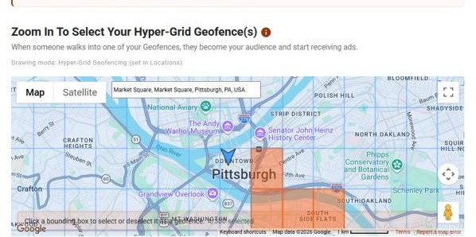

Ad tech
Making a self-serve ad platform feel simple
A self-serve platform where small businesses and agencies run location-targeted ads across display, streaming video, pre-roll and audio. Rev3 took over design and development in September 2025. I rebuilt campaign setup so each step asks one thing at a time, and helped turn a new targeting idea into the platform's most successful feature. Payment volume grew 79% over the next thirteen months.
- My role: Product designer, sole designer
- Team: Rev3 Labs
- Status: Live, ongoing

The problem
The goal is simple to say: let a small business owner set up and run a geofence ad campaign on their own. The product didn't feel that simple. Screens were wordy, and each page asked for everything at once. Someone new to ad buying didn't know where to start, and a mistake early on might not surface until the end.
The business also runs lean. Every design and development hour has to earn its place, and live campaigns are real money. If one runs wrong or doesn't run at all, that's revenue that never reaches the platform. Every change had to ship without disrupting anyone.
What I looked at
Before changing anything, I worked out who uses it, how campaigns actually get built, and what the business needs the platform to do. Two things stood out.
- Everything was visible all the time. Most of the confusion came from showing every option before the user had made the choices that decide which options matter.
- Mistakes were easy to make and hard to fix. Choices that depend on each other weren't connected, so it was possible to set up a campaign that couldn't run.
Three decisions that shaped it
Show the next question only when it matters
The old first page asked for the ad type, how to target, and the campaign's goals all at once. I split it apart. Step one is just a name and an ad type. Step two asks for a targeting mode, and only once you've picked one does it show the target types that work with it, along with a short note on what that mode unlocks later.


The builder became seven short steps: set up the campaign, choose the type, set locations, reach and conversions, upload ads, flight and budget, review. Each step locks the choices that depend on it, so nobody ends up with a video ad on a display campaign. Budgets show live estimates for spend, CPM, impressions and clicks as you type, and conversion tracking only appears when a campaign needs it.
The trade-off. More steps means more clicks. I took that trade, because each click asks for one thing the user can answer confidently, and mistakes get caught where they happen instead of at the end.
Turn a regulatory problem into a simpler way to target
Some states started limiting how precisely ads can be matched to a location. The CEO had an idea for a grid-based approach, and I worked with him as a thought partner on how it could work technically and how it should feel to use.
Standard geofencing means drawing shapes point by point on a map: precise, but fiddly and intimidating. Hyper-Grid lets an advertiser click pre-defined half-mile cells instead. Search an address and the map jumps there without losing the grid, a counter shows what's selected, and first-timers get a short tip and a walkthrough.

The trade-off. A grid cell is less exact than a hand-drawn shape. So Precision geofencing stays available, and the two are explained side by side in plain language before anyone commits.
Ship in the order the business could afford
With a lean budget, sequencing mattered as much as design. We shipped what added revenue soonest, and saved the big rebuild for once that was steady. Every release went through QA before deploy, so live campaigns kept running throughout.
- Dec 2025. Digital audio ads, a new channel for podcast, music-streaming and radio-app audiences.
- Jan 2026. Event geofencing: reach people at an event, then retarget them for up to 30 days after.
- Apr to Sep 2026. The rebuilt campaign flow, budget experience and campaign cards.
- Jul to Oct 2026. Hyper-Grid, partner audiences and conversion tracking.
What happened
Comparing the thirteen months since Rev3 took over with the thirteen before:
- 79% growth in gross payment volume.
- 730 new paying customers, up 39%.
- 67% more advertisers spending on a typical day.
- 3.2x as many campaigns delivering per day.
Not all of that is design. The business stepped up its marketing over the same stretch, and the platform was maturing on its own. But more advertisers launching more campaigns by themselves is exactly what less friction should produce, and Hyper-Grid has been the most successful feature we've shipped.
How I worked
The CEO made the final calls. My job was to be the sounding board: bring options, say what was feasible and what it would cost, and push back when a request would make the product harder to use.
What I'd do with more time
With a lean budget you pick your battles, and a few are still on my list.
- Take step-by-step further. The upload step could hold back the creative uploader until there's a landing page URL, the same way earlier steps reveal what comes next. The catch: some advertisers have their ads ready before the landing page exists and just want a draft in place. Requiring the URL first would block them. Do we let them keep going without it? It's a small screen, but it's exactly the kind of trade-off this product is full of.
- Harden the sync behind the scenes. Every campaign touches two outside systems, and campaign status, delivery and billing have to agree across all of them. It's improved steadily, but I want background jobs that keep everything in sync automatically, so the numbers advertisers see and the amounts they're billed are always right.
Vue.js on AWS, with Stripe billing and a programmatic DSP integration.